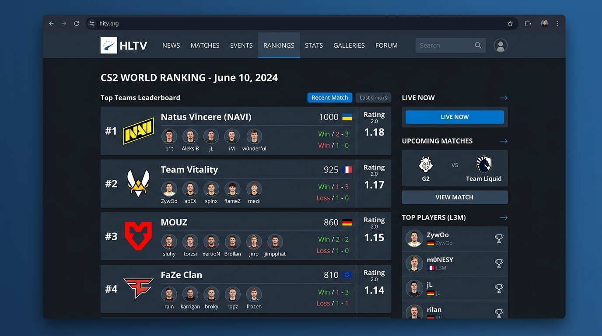
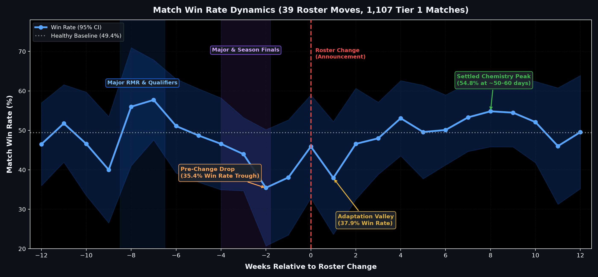
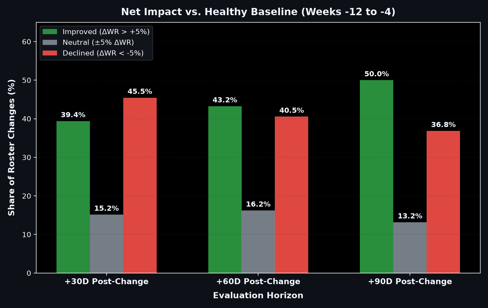
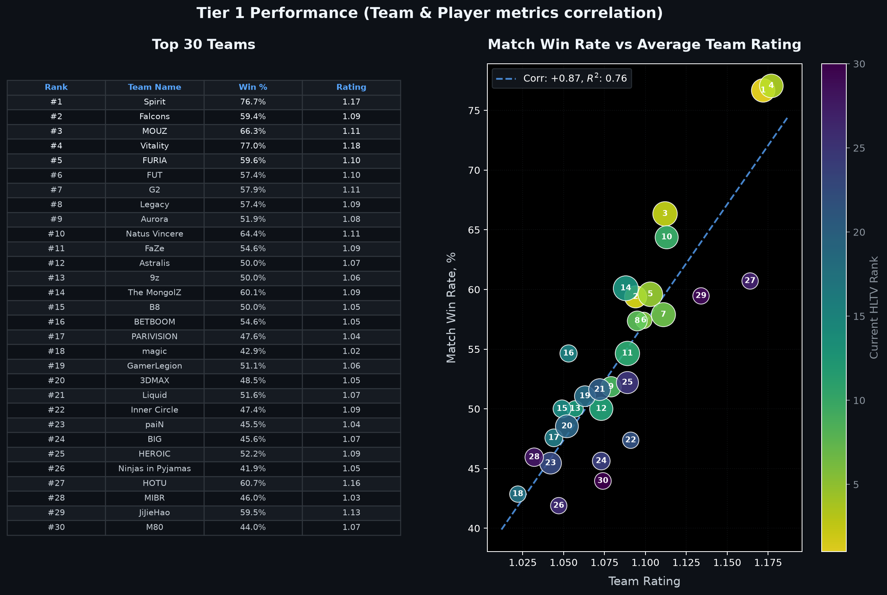
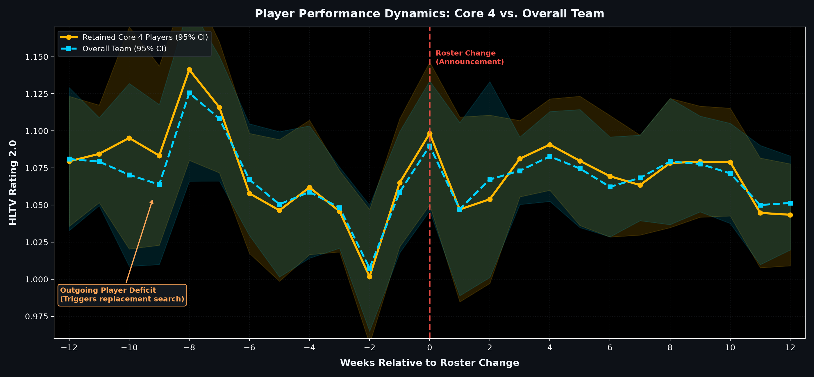
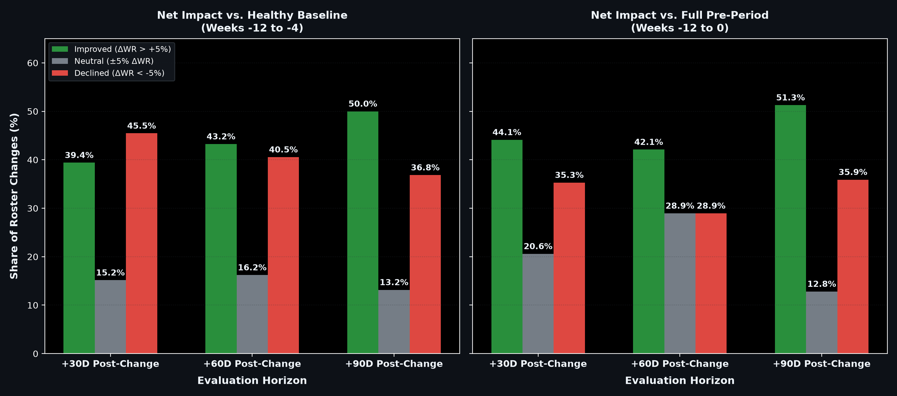

Counter-Strike 2: High-Stakes Esports
A premier multi-million dollar competitive gaming ecosystem.
What CS2 Looks Like in Action
High-intensity 100-second rounds. One single mistake costs everything.
What is a Roster Change?
An active roster consists of exactly 5 starting players. Swapping one is a pivotal executive choice.
Research Question 1
“When a Top 30 team replaces 1 player,
does performance on Tier 1 events sustainably improve?”
Workflow: From Raw Web to Insights
Six structured stages from scraping to empirical validation.

Database Architecture: Relational Structure
Full relational hierarchy connecting high-level events to individual player stats.
The Filtration Funnel: Isolating Moves
Removing multi-player churn, small tournaments, and inactive rosters.
Match Win Rate Lifecycle
39 roster moves • 1,107 Tier 1 matches • 14-day statistics window (min. 2 matches/window).

The 50% Coin Flip: Trend Dynamics
Evaluating net performance deltas against healthy baseline at +30d, +60d, and +90d horizons.

Why This Story Matters to Management
Decisions costing millions must be driven by data, not panic.
Ethical Implications of Roster Churn
The human toll behind rapid corporate esports substitutions.
Study Limitations
Interpreting findings with scientific rigor, statistical humility, and real-world esports context.
Thanks! Questions?
CS2 Roster Dynamics • Empirical Impact of 1-Player Substitutions in Tier 1 Esports
Appendix: Metric Validation & Team Rating Breakdown
Step 1: Metric foundation (r = +0.87) • Step 2: Core 4 vs. Team rating trajectories (Plot B).


Appendix: Dual Baseline Distribution Comparison
Comparative distributions: Healthy Baseline (Weeks −12 to −4) vs. Full Pre-Period with Slump (Weeks −12 to 0).
